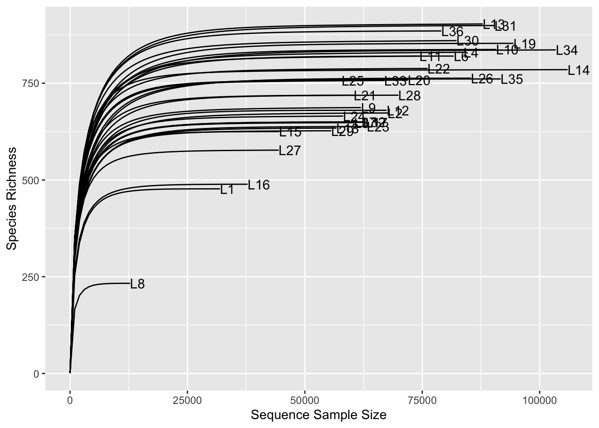
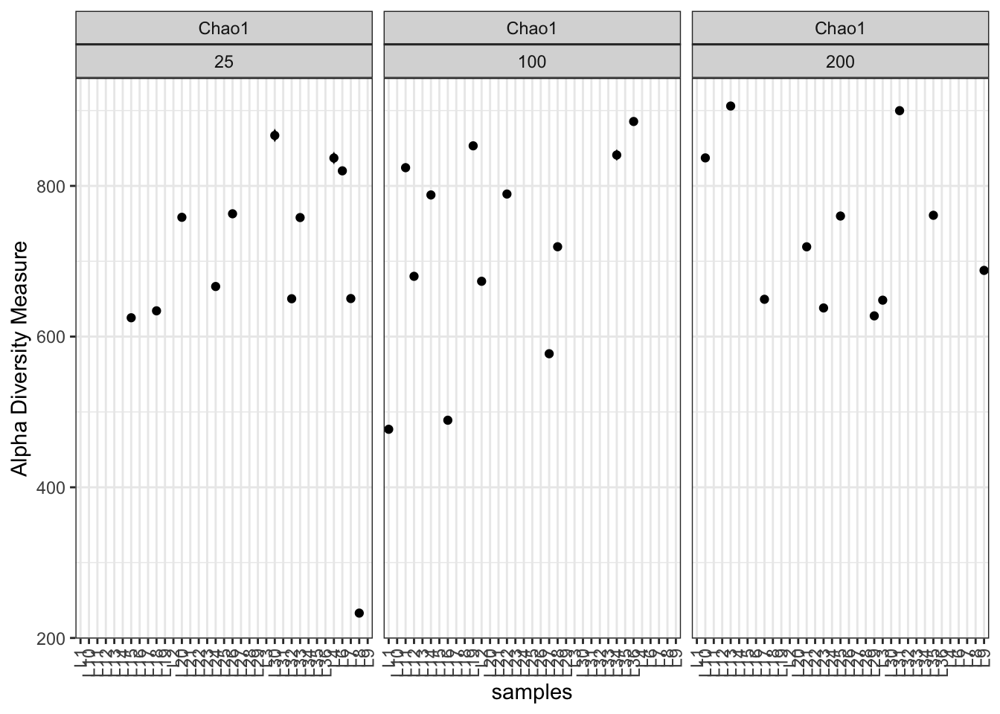

library(phyloseq)
library(tidyverse)
library(microbiome)
library(ggpubr)
library(ggsci)
library(ranacapa)
library(psadd)
library(DESeq2)Microbiome Data Analysis
Analysis pipeline base on this repository: Bacteria Ark
Importing Libraries
Importing data
Importing raw data
# Tax table
tax_file <- read_tsv("Data/asv-taxonomy-mapping.tsv")
# ASV table
asv_count <- read_tsv("Data/asvtable-processed-absolute.tsv")
# Metadata
micro_metadata <- read.csv("Data/sample-metadata.csv", stringsAsFactors = T)Modifying tables fro phyloseq
#ASV table
asv_names <- asv_count$asv
asv_count <- asv_count %>% select(-asv)
rownames(asv_count) <- asv_names Warning: Setting row names on a tibble is deprecated.ASV <- otu_table(as.matrix(asv_count), taxa_are_rows = T)
# Metadata
micro_metadata <- as.data.frame(micro_metadata)
rownames(micro_metadata) <- micro_metadata$NAME
SAMPLE <- sample_data(micro_metadata)Separating Tax single column into multiple column
# tax cleaning
# https://www.yanh.org/2021/01/01/microbiome-r/
# clean the taxonomy, Greengenes format
tax <- tax_file %>%
select(tax) %>%
separate(tax, c("Kingdom", "Phylum", "Class", "Order",
"Family", "Genus", "Species"), ";") %>%
mutate_all(str_sub, start = 4, end = -4)
tax <- replace(tax, tax == "", "Unclassified")
rownames(tax) <- tax_file$asvWarning: Setting row names on a tibble is deprecated.TAX <- tax_table(as.matrix(tax))Creating a phyloseq object
floral_microbiome_raw <- phyloseq(ASV, TAX, SAMPLE)
floral_microbiome_rawphyloseq-class experiment-level object
otu_table() OTU Table: [ 4256 taxa and 35 samples ]
sample_data() Sample Data: [ 35 samples by 29 sample variables ]
tax_table() Taxonomy Table: [ 4256 taxa by 7 taxonomic ranks ]- 4256 taxa
- 35 samples
- 29 variables in metadata
Filtering data
Removing Unclassified
Unclassified at Kindom level and Archea ASV
floral_micro_filter <- subset_taxa(floral_microbiome_raw,
Kingdom != "Unclassified" & Kingdom != "Archaea")
floral_micro_filterphyloseq-class experiment-level object
otu_table() OTU Table: [ 4253 taxa and 35 samples ]
sample_data() Sample Data: [ 35 samples by 29 sample variables ]
tax_table() Taxonomy Table: [ 4253 taxa by 7 taxonomic ranks ]We remove 3 taxa that are either Unclassified or Archaea
Removing cloroplast
floral_micro_filter <- subset_taxa(floral_micro_filter,
Order != "Chloropl")
floral_micro_filterphyloseq-class experiment-level object
otu_table() OTU Table: [ 4197 taxa and 35 samples ]
sample_data() Sample Data: [ 35 samples by 29 sample variables ]
tax_table() Taxonomy Table: [ 4197 taxa by 7 taxonomic ranks ]We removed 53 ASV assigned as Chloroplast at the Order level
Unclassified at Phylum level
floral_micro_filter <- subset_taxa(floral_micro_filter,
Phylum != "Unclassified")
floral_micro_filterphyloseq-class experiment-level object
otu_table() OTU Table: [ 4150 taxa and 35 samples ]
sample_data() Sample Data: [ 35 samples by 29 sample variables ]
tax_table() Taxonomy Table: [ 4150 taxa by 7 taxonomic ranks ]Basis Read info
Sequencing depth
# Sequencing depth
SeqDepth = colSums(otu_table(floral_micro_filter))
# Add depth to the metadata
sample_data(floral_micro_filter)$SeqDepth <- SeqDepth
meta(floral_micro_filter) %>%
ggplot(aes(NAME, SeqDepth,fill = factor(Treatment))) +
geom_col() + theme_classic() + scale_fill_cosmic() +
rotate_x_text() +
labs(fill = "Treatment\nFertilizer (ppm)",
x = "Sample Name", y = "Secuencing Depth",
title = "Secuending depth per sample")Removing singletons
#checking for singletons
sum(taxa_sums(floral_micro_filter) == 1)[1] 66 ASV with only 1 count, these are considered chimeric and therefore, are removed
floral_micro_filter <- prune_taxa(taxa_sums(floral_micro_filter) > 5,
floral_micro_filter)
floral_micro_filterphyloseq-class experiment-level object
otu_table() OTU Table: [ 2661 taxa and 35 samples ]
sample_data() Sample Data: [ 35 samples by 30 sample variables ]
tax_table() Taxonomy Table: [ 2661 taxa by 7 taxonomic ranks ]Kronas plot
# Kronas per sample
plot_krona(physeq = floral_micro_filter,
output = "Figures/Kronas/per_sample",
variable = "NAME")
plot_krona(physeq = floral_micro_filter,
output = "Figures/Kronas/per_treatment",
variable = "Treatment")Rarefraction curves
set.seed(2023)
plt_rarefraction <- ggrare(floral_micro_filter, step = 1000,
label = "NAME", se = F) +
theme_classic() +
labs(title = "Rarefraction curves per sample")rarefying sample L1
rarefying sample L10
rarefying sample L11
rarefying sample L12
rarefying sample L13
rarefying sample L14
rarefying sample L15
rarefying sample L16
rarefying sample L17
rarefying sample L18
rarefying sample L19
rarefying sample L2
rarefying sample L20
rarefying sample L21
rarefying sample L22
rarefying sample L23
rarefying sample L24
rarefying sample L25
rarefying sample L26
rarefying sample L27
rarefying sample L28
rarefying sample L29
rarefying sample L3
rarefying sample L30
rarefying sample L31
rarefying sample L32
rarefying sample L33
rarefying sample L34
rarefying sample L35
rarefying sample L36
rarefying sample L4
rarefying sample L6
rarefying sample L7
rarefying sample L8
rarefying sample L9
Relative Barchar
Phyla level
# Calculate relative abundances
floral_micro_rel <- transform_sample_counts(floral_micro_filter,
function(x) x/sum(x)*100)
# Agglomerate taxa genus
floral_glom_fl <- tax_glom(floral_micro_rel, taxrank = "Family", NArm = FALSE)
floral_glom_melt_fl <- psmelt(floral_glom_fl)
floral_glom_melt_fl$Family <- as.character(floral_glom_melt_fl$Family)
# Calculating
floral_gm_sum_fl <- floral_glom_melt_fl %>%
group_by(NAME, Family, Treatment) %>%
summarise(Abundance = sum(Abundance))
floral_gm_sum_fl <- floral_gm_sum_fl %>%
mutate(Treatment = factor(Treatment, levels = c(25, 100, 200) )) %>%
mutate(Family = case_when(Abundance < 5 ~ "< 5%",
TRUE ~ Family) )
#ggplot
ggplot(floral_gm_sum_fl, aes(NAME, Abundance, fill = Family) ) +
geom_bar(stat = "identity") + facet_wrap("Treatment", scales = "free_x") +
theme_classic() + rotate_x_text() + scale_fill_aaas() +
labs(x = "Sample Name")Genus level
# Calculate relative abundances
# Agglomerate taxa genus
floral_glom <- tax_glom(floral_micro_rel, taxrank = "Genus", NArm = FALSE)
floral_glom_melt <- psmelt(floral_glom)
floral_glom_melt$Genus <- as.character(floral_glom_melt$Genus)
# Calculating
floral_gm_sum <- floral_glom_melt %>%
group_by(NAME, Genus, Treatment) %>%
summarise(Abundance = sum(Abundance))
floral_gm_sum <- floral_gm_sum %>%
mutate(Treatment = factor(Treatment, levels = c(25, 100, 200) )) %>%
mutate(Genus = case_when(Abundance < 3~ "< 3%",
TRUE ~ Genus) )
#ggplot
ggplot(floral_gm_sum, aes(NAME, Abundance, fill = Genus) ) +
geom_bar(stat = "identity") + facet_wrap("Treatment", scales = "free_x") +
theme_classic() + rotate_x_text() +
labs(x = "Sample Name")Diversity calculations
Alpha diversity
sample_data(floral_micro_filter)$Treatment <-
factor(sample_data(floral_micro_filter)$Treatment, levels = c(25, 100, 200))
richness <- estimate_richness(floral_micro_filter,
measures = c("Chao1", "Simpson", "Shannon"))
plt_rich_chao1 <- plot_richness(floral_micro_filter,
measures = c("Chao1"), nrow = 3) +
scale_color_aaas() + theme_bw() + rotate_x_text() +
facet_wrap(variable~Treatment )
plt_rich_chao1
Deseq2 analysis
Remove poor represented ASV
In this case, since we are going to conduct comparative analysis, we need to remove ASV with less that 5 counts as well as to be detected in at least 50% of the samples. This yields to a total of 534 taxa that meet this two criteria.
floral_micro_filter_5C <- genefilter_sample(floral_micro_filter,
filterfun_sample(function(x) x > 5),
A=0.5*nsamples(floral_micro_filter)
)
floral_micro_deseq <- prune_taxa(floral_micro_filter_5C, floral_micro_filter)
floral_micro_deseqphyloseq-class experiment-level object
otu_table() OTU Table: [ 534 taxa and 35 samples ]
sample_data() Sample Data: [ 35 samples by 30 sample variables ]
tax_table() Taxonomy Table: [ 534 taxa by 7 taxonomic ranks ]Transform counts to a even depth
As we can see, 71080 is an intermediate sequencing depth for treatment. We are going to transform the count table from absolute counts to an homogeneous depth.
meta(floral_micro_deseq) %>%
group_by(Treatment) %>%
summarise(Depth_mean = mean(SeqDepth))# A tibble: 3 × 2
Treatment Depth_mean
<fct> <dbl>
1 25 64103.
2 100 71081.
3 200 71230.floral_micro_relat <- transform_sample_counts(floral_micro_deseq,
function(x) 71080 * x/(sum(x)))Keeping the 6 most abundant phyla
Only the six most abundant phyla are preserved for downstream analysis to remove low represented ASV.
This can be view in the Kronas plot and the Top Six Phylum are
Proteobacte
Actinobacteri
Bacteroid
Verrucomicrobi
Plantcomycet
phylum_sum <- tapply(taxa_sums(floral_micro_relat),
tax_table(floral_micro_relat)[, "Phylum"], sum, na.rm = TRUE)
top5phyla <- names(sort(phylum_sum, decreasing = TRUE))[seq(6)]
top5phyla[1] "Proteobacte" "Actinobacteri" "Bacteroid" "Verrucomicrobi"
[5] "Planctomycet" "Acidobacteri" floral_micro_relat <- prune_taxa((tax_table(floral_micro_relat)[, "Phylum"] %in% top5phyla),
floral_micro_relat)
floral_micro_relatphyloseq-class experiment-level object
otu_table() OTU Table: [ 456 taxa and 35 samples ]
sample_data() Sample Data: [ 35 samples by 30 sample variables ]
tax_table() Taxonomy Table: [ 456 taxa by 7 taxonomic ranks ]The final result yield us to a total of 456 ASV for downstream analysis.
Transforming to Deseq2 object
phyloseq::sample_data(floral_micro_relat) <- meta(floral_micro_relat) %>%
mutate(Block = factor(Block, levels = seq(6) ),
Time = factor(Time),
Treatment = factor(Treatment))
diagdds_floral <- phyloseq_to_deseq2(floral_micro_relat,
design = ~Block + Treatment + Time + Treatment*Time)converting counts to integer modegm_mean = function(x, na.rm=TRUE){
exp(sum(log(x[x > 0]), na.rm=na.rm) / length(x))
}
geoMeans = apply(counts(diagdds_floral), 1, gm_mean)
# Variance estimation
diagdds_floral = estimateSizeFactors(diagdds_floral, geoMeans = geoMeans)
diagdds_floral = estimateDispersions(diagdds_floral, fitType='local')gene-wise dispersion estimatesmean-dispersion relationshipfinal dispersion estimatesExtraction of the normalized matrix
diagvst_floral = getVarianceStabilizedData(diagdds_floral)
dim(diagvst_floral)[1] 456 35Now, we can replace the normalized matrix for the absolute counts in the phyloseq object
floral_micro_deseq_final <- floral_micro_rel
otu_table(floral_micro_deseq_final) <- otu_table(diagvst_floral, taxa_are_rows = TRUE)Differential ASV
Let’s check first the design to make sure we have the right formula
design(diagdds_floral)~Block + Treatment + Time + Treatment * Time#Defining alpha level
alpha = 0.05
#Differential analysis
diagdds_floral <- DESeq(diagdds_floral, fitType = "local")using pre-existing size factorsestimating dispersionsfound already estimated dispersions, replacing thesegene-wise dispersion estimatesmean-dispersion relationshipfinal dispersion estimatesfitting model and testingresults_deseq <- results(diagdds_floral)
#results_deseq <- diagdds_floral[order(diagdds_floral$padj, na.last = NA), ]
resultsNames(diagdds_floral) [1] "Intercept" "Block_2_vs_1" "Block_3_vs_1"
[4] "Block_4_vs_1" "Block_5_vs_1" "Block_6_vs_1"
[7] "Treatment_100_vs_25" "Treatment_200_vs_25" "Time_2_vs_1"
[10] "Treatment100.Time2" "Treatment200.Time2" sig_dif_asv <- results_deseq[which(results_deseq$padj < alpha), ]
sig_dif_asv <- cbind(as(sig_dif_asv,"data.frame"),
as(tax_table(floral_micro_deseq_final)[rownames(sig_dif_asv), ],
"matrix"))
sig_dif_asv <- remove_rownames(sig_dif_asv)
sig_dif_asv baseMean log2FoldChange lfcSE stat pvalue padj Kingdom
1 774.01032 0.8497361 0.2195828 3.869775 1.089359e-04 0.013827474 Bacte
2 647.18177 1.6183487 0.4256822 3.801777 1.436621e-04 0.013827474 Bacte
3 150.87652 3.3018801 0.7720993 4.276497 1.898573e-05 0.005427423 Bacte
4 61.03672 5.4152956 1.5311288 3.536800 4.050069e-04 0.025987945 Bacte
5 77.21488 9.1970051 2.1962575 4.187580 2.819441e-05 0.005427423 Bacte
6 24.81538 8.3578666 2.3324871 3.583242 3.393554e-04 0.025987945 Bacte
Phylum Class Order Family
1 Proteobacte Alphaproteobacte Rhizobia Rhizobiac
2 Verrucomicrobi Verrucomicrob Verrucomicrobia Rubritaleac
3 Proteobacte Alphaproteobacte Rhizobia Rhizobiac
4 Bacteroid Bacteroi Sphingobacteria Sphingobacteriac
5 Proteobacte Gammaproteobacte Burkholderia Comamonadac
6 Proteobacte Gammaproteobacte Burkholderia Oxalobacterac
Genus Species
1 Pseudaminobac Unclassified
2 Luteolibac Unclassified
3 Shine fu
4 Pedobac Unclassified
5 Rhizobac Unclassified
6 Janthinobacter Unclassified